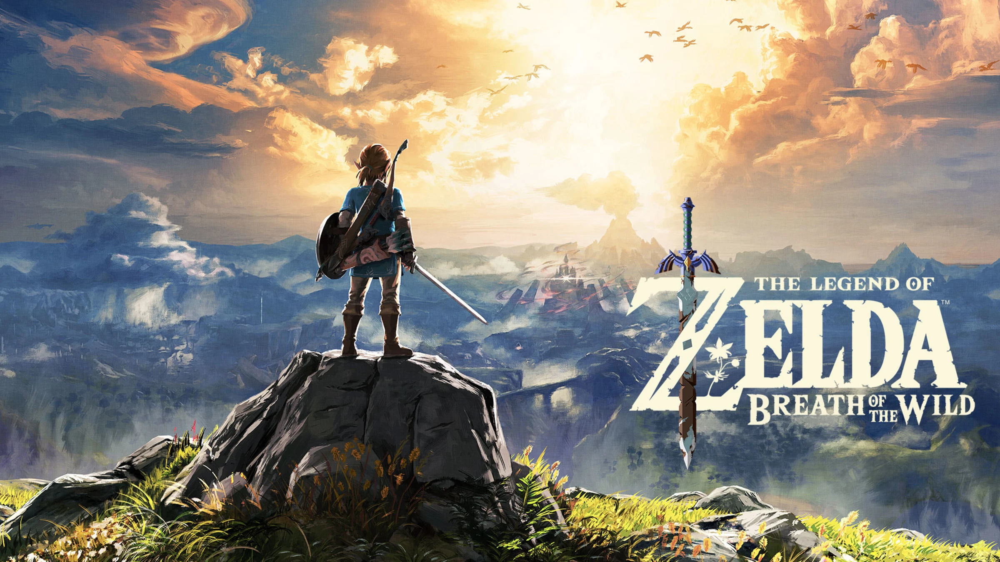

Welcome to my website!
Hello, my name is TheJustRusik, and on this website, I write about the world of video games and share my personal news and reviews. If you're also a gaming enthusiast, you've come to the right place!
On my blog, you'll find interesting game reviews, tips, guides, as well as my own impressions and news from the world of gaming. Stay with us and stay updated on all the latest releases and events!
Last blog:
Top 3 must-play games of 2023
Welcome back, fellow gamers! It's TheJustRusik here, and today, I'm thrilled to share my thoughts on the top 3 must-play games of 2023. It's shaping up to be an incredible year for gaming, and these titles have already made a big splash. So, grab your controllers, put on your headsets, and let's dive into the action!
1. Cyberpunk 2077

Kicking off our list is the highly anticipated "Cyberpunk Chronicles." This futuristic open-world RPG promises an immersive experience in a dystopian world dominated by machines. The attention to detail and gripping narrative make it a game you simply can't miss.
2. Legends of Eldoria: The Quest for Destiny
For fans of epic fantasy adventures, "Legends of Eldoria" is a game changer. With its breathtaking visuals and rich storytelling, it transports players to a magical realm where they must uncover the secrets of destiny. This one's a masterpiece in the making.
3. Galactic Outlaws: Space Odyssey

If you're yearning for some intergalactic action, "Galactic Outlaws" has got you covered. Explore vast star systems, build your crew of spacefaring misfits, and take on epic heists and missions. The universe is your playground..